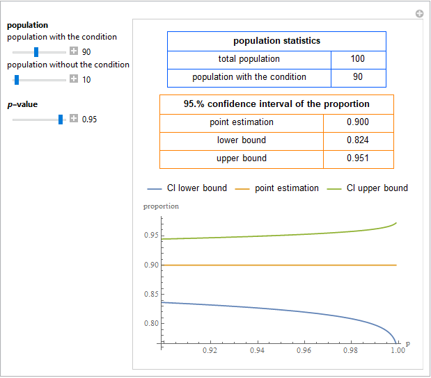

|
| Hellenic Complex Systems Laboratory |
| Home |
| HCSL Publications |
| GAs Based QC |
| QC Design |
| QC, Reliability, and Risk |
| Diagnostic Accuracy |
| Clinical Tools |
| Networks |
| Statistics of Complexity |
| Entropy and GAs |
HCSL Publications
Statistical Tools
1. Chatzimichail C, Hatjimihail AT. Calculation of Exact Confidence Interval of a Single Proportion. [Submitted to Wolfram Demonstrations Project].
Abstract
This Demonstration shows calculations of point estimations and confidence intervals for various single proportions of populations with a condition (or trait), as well as their plots versus p-value. This is done for differing populations with and without a condition (or trait) and differing p-values for the estimation of the lower and upper bounds of the confidence intervals. The populations with and without the condition (or trait), along with the p-value, are chosen using the sliders.
Comment
For calculating the confidence interval of each single proportion the exact method using the F distribution is applied.

Snapshot of the Demonstration